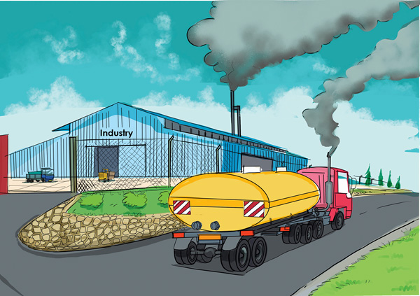

Smoke from industries, vehicles and homes
The smoke from industries, vehicles and homes is a source of air pollution.
This is because it contains carbon dioxide, which causes air pollution and global warming.The use of firewood and charcoal as a source of energy for cooking produces carbon dioxide, which pollutes air and causes environmental degradation.Figure 2 shows air pollution by smoke from industries and vehicles.

Therefore, the society is advised to use new vehicles to reduce the amount of smoke from vehicles.Alternatively, the society should use electricity and gas-powered vehicles.In addition, industries should use cleaning technologies to clean gases before they are released into the atmosphere.Trees also help to absorb carbon dioxide from the air.Moreover, people should use alternative sources of energy